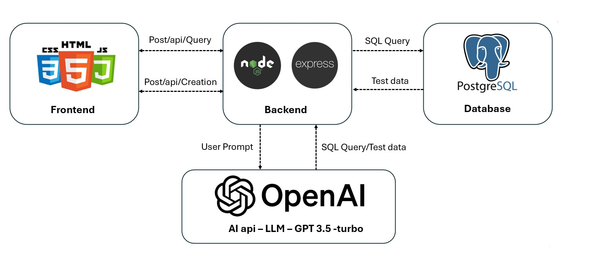

AI-powered Smart Query and Data Fetching: Seamlessly retrieve, filter, and transform data using natural language queries, powered by OpenAI GPT3.5-turbo.

System architecture showing integration of OpenAI, Node.js backend, and PostgreSQL database.